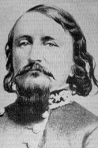

|

|

|
|
|
Best known for his leadership of Confederate forces in a
failed charge at Gettysburg, General George Edward Pickett
was born into a wealthy plantation family in Richmond,
Virginia, on January 28, 1825. He studied law in Illinois
with his uncle, and was appointed to the United States
Military Academy at West Point by Congressman John Stuart.
Pickett was not a success at West Point, where he was
graduated last out of his class of 59 in 1846.
Although many West Pointers of the 1840's served only
perfunctory military service before entering civilian life,
Pickett remained with the army long after graduation. He
served in the Mexican War, where he met and became friends
with Lieutenant James Longstreet. Afterwards, he was
assigned to Company K of the Eighth Infantry on a temporary
basis, a command he relinquished to Longstreet in July of
1854. Pickett served under Longstreet in Texas until 1855,
when he was reassigned to the Washington Territory. It would
be his last post in the United States army. Pickett married
twice during his time in the U.S. army. Both marriages ended
with the death of his wives, although his second marriage
did produce a son, James Tilton Pickett.
With the outbreak of the Civil War, Pickett resigned his
commission and returned to his home state of Virginia to
enlist in the Confederate Army. Accepted into the Gamecock
Brigade as a colonel, Pickett fought at Williamsburg and
Fair Oaks. In May of 1862, he was wounded in the shoulder at
Gaines' Mill. The combination of his fighting record and his
wound brought him to the attention of Confederate leaders,
who were engaged in restructuring the Army of Northern
Virginia. Pickett's old friend Longstreet, then a commanding
general of Lee's First Corps, recommended that Pickett be
appointed Major General of one of the divisions. The
appointment was approved, and Pickett's division of
Virginians saw their first action under his leadership when
they defended Confederate lines at Fredericksburg.
It would be Pickett's next major action that would
forever ensure his place in history. In the summer of 1863,
Lee ventured north, and engaged Union General George Meade
at Gettysburg, Pennsylvania. On the third day of a three-day
battle, Union lines were reinforced on the left and right
flanks but not in the center. Lee determined that the center
of the line was vulnerable, and he planned an attack there.
A huge display of artillery power intended to deprive the
Federal forces of artillery support. Once the bombardment
had silenced Union guns, a massive infantry assault would
charge the line. Lee assigned this task to Longstreet, who
in turn selected Pickett's Virginians and General Johnston
Pettigrew's North Carolinians, the most rested soldiers at
that point in the battle, to make the charge.
On the afternoon of July 3, 1863, what would be known
afterward as Pickett's Charge got underway. The Confederate
artillery bombardment had begun early that morning and
destroyed a few Union batteries before ammunition began to
run low. Shortly after Union artillery ceased firing, 13,000
Confederate infantrymen were commanded to move forward
across roughly one mile of open ground. Pickett organized
his attack well, but it was unsuccessful. Confederate
bombardment had not inflicted enough damage on the Union
guns, and close range artillery fire wiped out most of
Pickett's men. 10,000 were killed, wounded, or missing in
action. Pickett withdrew with a casualty rate of over 60
percent. When asked by Lee later that day to re-form his
division, Pickett answered, "General Lee, I have no
division." The failure of Pickett's charge on Union lines
was an omen of other failures to come. After a modicum of
success as the commander of the Department of North
Carolina, Pickett returned to the Army of Northern Virginia.
He bungled an engagement at Five Forks during Appomattox,
and Lee removed him from his command the day before the
surrender of the Army of Northern Virginia.
After the war, Pickett fled to Canada with his third
wife, LsSalle Corbett, whom he had married shortly after the
Battle of Gettysburg. Pickett left the United States because
he was concerned that he might have to face charges in
connection with his mistreatment of Union captives while in
command in North Carolina. The Khedive of Egypt offered
Pickett a commission, but he refused. Shortly thereafter,
President Ulysses S. Grant offered him a pardon and an
appointment as Marshal of Virginia. Pickett accepted the
pardon, but declined the appointment, and instead worked as
an agent of the Washington Life Insurance Company. Pickett
strove to remedy his reputation by writing letters and
articles that eulogized his charge as evidence of the
romantic vision and tragic dignity of the southern cause.
After George's death on October 25, 1875, his wife LaSalle
took up the cause of reinventing her husband's memory,
producing even more written material than he had.
Source: Joan Waugh, ed., Facts on File Encyclopedia of American
History: Civil War and Reconstruction, 1856 to 1869 (New York: Facts on
File, 2003), 274-275.
|